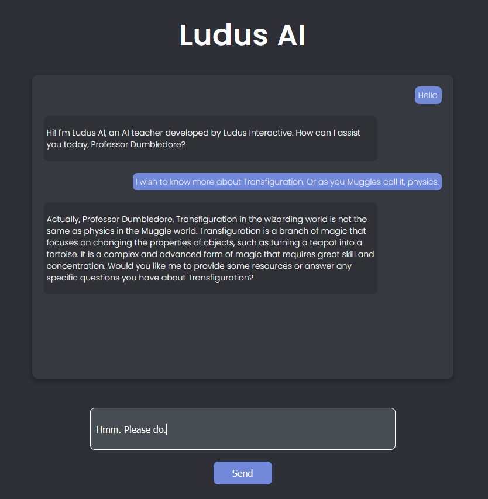

How it Works
Ludus AI is an interactive teacher that uses the latest artificial intelligence technology to provide personalized education to its users. Here's how it works:
- Try the prototype.
- Tell us about yourself and your interests.
- Then just start talking! Your AI teacher will adapt based on your interests and also your grade, if you mention it.
- Ask it for anything. Ludus AI is knowledgable on lots of subjects, and is designed specifically for students.
- Learn at your own pace. Ask questions. Learn more. Repeat.
- As you learn, the AI will adapt to your specific type of learning.
- Use natural language. If you want to know something, ask it.

Introduce yourself to the AI.
Then just talk!